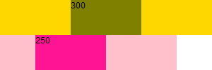
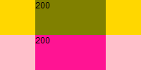
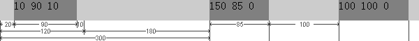
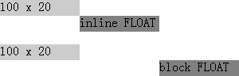
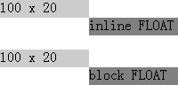

根据 W3C CSS2.1 规范中的描述，对于非替换的浮动元素，若 'margin-left' 或 'margin-right' 特性的计算值为 'auto'，则它们的实际使用值为 '0'。
除此之外，'margin-left' 与 'margin-right' 特性的计算则采用其自身定义的规范。
关于 'margin-left'、'margin-right' 以及 非替换的浮动元素宽度计算 的详细信息，请参考 CSS2.1 规范 8.3 Margin properties: 'margin-top', 'margin-right', 'margin-bottom', 'margin-left', and 'margin' 以及 10.3.5 Floating, non-replaced elements 中的内容。
在 IE5.0 IE5.5 IE6 中，当为一个块级元素同时设置了向左浮动（float:left）及左边距或右边距（'margin-left' | 'margin-right'）后，则该元素的左边距或右边距在某些情况下会是设定值的两倍。同样地，向右浮动（float:right）及右边距（'margin-right'）也存在此现象。
这个是 IE 著名的 "双边距Bug"（IE Double Margin Bug）。
这种双倍边距的怪异现象会对页面造成很多影响，如意外折行、溢出、文字重叠等诸多兼容性问题。
| IE5.0 IE5.5 IE6 |
|---|
首先重现这个 Bug。
分析以下代码：
<!DOCTYPE html> <html> <head> <script> window.onload = function () {
document.getElementById("d1").innerHTML = document.getElementById("d1").parentNode.offsetWidth;
document.getElementById("d2").innerHTML = document.getElementById("d2").parentNode.offsetWidth; }
</script> </head> <body style="font:12px Arial; margin:0;"> <div
style="width:100px;"> <div style="background:gold; float:left;"> <div id="d1"
style="float:left; margin:0 50px; background:olive; width:100px; height:50px;"></div>
</div> <div style="background:pink; float:left;"> <div id="d2" style="float:right;
margin:0 50px; background:deeppink; width:100px; height:50px;"></div> </div> </div>
</body> </html>
上面代码中有两组 DIV 容器，容器内的 DIV 元素分别设置了向左浮动（float:left）与向右浮动（float:right），且左右边距均为 50px（margin:0 50px）。当页面加载完毕后将 DIV 容器的 offsetWidth 显示出来。
在各浏览器中打开这个页面效果如下：
| IE5.0 IE5.5 IE6 | IE7 IE8 Firefox Chrome Safari Opera |
|---|---|
|  |  |
从上面的例子与截图可见：
触发此 Bug 的条件有 3 个：
下面结合上面的触发条件看一组更加复杂的例子：
<style> .fl { float:left; height:30px; background:gray; } #A { width:90px; margin:0 10px; } #B {
width:85px; margin-left:150px; } #C { width:100px; margin-left:100px; } </style> <div
style="width:600px; height:30px; background:#CCC;"> <div id="A" class="fl">10 90 10</div>
<div id="B" class="fl">150 85 0</div> <div id="C" class="fl">100 100 0</div>
</div>
测试代码中 DIV 容器中包含了三个 DIV 子元素，这三个子元素均为左浮动元素，且均拥有 'margin-left' 特性。
不同的浏览器运行的结果列表如下：
|
IE5.0
IE5.5 IE6 |
 |
|---|---|
|
IE7
IE8 Firefox Chrome Safari Opera |
在 IE5.0 IE5.5 IE6 中，
上面讨论的都是元素浮动之前为块级元素，下面观察一下 'display' 特性分别为 'inline' 及 'block' 的 SPAN 元素浮动后的情况：
<div style="width:100px; height:20px; background:#ccc;">100 x 20</div> <span
style="float:left; margin-left:100px; width:100px; height:20px; background:gray;">inline
FLOAT</span> <br /><br /> <div style="width:100px; height:20px;
background:#ccc;">100 x 20</div> <span style="float:left; margin-left:100px; width:100px;
height:20px; background:gray; display:block">block FLOAT</span>
这段代码在不同浏览器中运行效果为：
|
IE5.0
IE5.5 IE6 |
 |
|---|---|
|
IE7
IE8 Firefox Chrome Safari Opera |
 |
从上面一组截图中很明显的看出，双边距 Bug 会作用于 'display' 特性为 'block' 的元素，对于 'inline' 的元素不会触发此 Bug。
| 操作系统版本: | Windows 7 Ultimate build 7600 |
|---|---|
| 浏览器版本: |
IE5 [Windows 98]
IE5.5 [Windows 2000] IE6 [Windows XP] IE7 IE8 Firefox 3.6 Chrome 5.0.342.5 dev Safari 4.0.4 Opera 10.50 |
| 测试页面: |
double_margins_1.html
double_margins_2.html |
| 本文更新时间: | 2010-08-10 |
IE double margin float 双边距 浮动